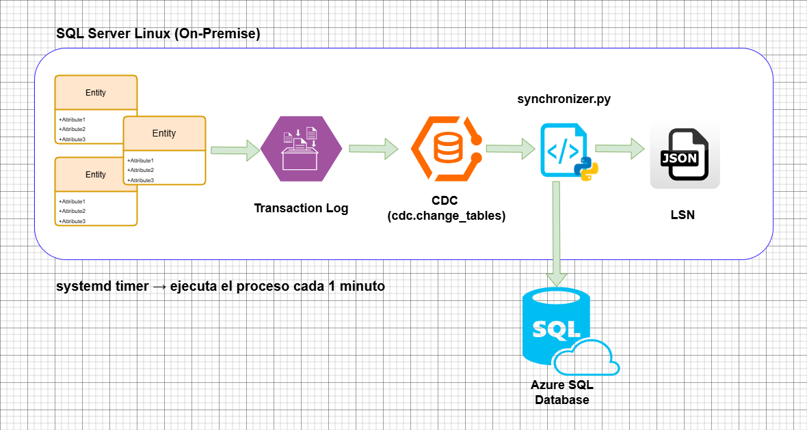

Sistema de replicación near real-time desde SQL Server on-premise en servidor con Ubuntu Server hacia Azure SQL Database. El proyecto captura cambios en tablas de negocio usando CDC (Change Data Capture) y los replica automáticamente en la nube cada minuto, sin exponer el servidor local a internet.
Fue desarrollado como proyecto de práctica para profundizar en ingeniería de datos, replicación de bases de datos y automatización en entornos Linux.

| Componente | Tecnología |
|---|---|
| Base de datos origen | SQL Server 2025 on Linux (Ubuntu Server) |
| Base de datos destino | Azure SQL Database |
| Captura de cambios | SQL Server CDC |
| Lenguaje | Python 3 |
| Orquestación | systemd timer |
| Pruebas | pytest + pytest-mock |
| Gestión de entorno | python-dotenv |
CDC (Change Data Capture) no depende de timestamps ni columnas especiales en las tablas. Lee directamente el transaction log de SQL Server y registra cada cambio en tablas internas con la siguiente información:
__$operation → Tipo de cambio: INSERT, UPDATE, DELETE numeradas (1, 2, 3)__$start_lsn → LSN (Log Sequence Number) que identifica la posición exacta en el logEl sistema usa el LSN como watermark por tabla para saber exactamente desde qué punto leer en cada ciclo, garantizando que ningún cambio se pierda ni se duplique.
onprem-to-azure-cdc/
├── main.py → Punto de entrada
├── synchronizer.py → Lógica principal de sincronización
├── db_connections.py → Gestión de conexiones
├── watermark_manager.py → Control del LSN por tabla
├── cdc_utils.py → Utilidades CDC
├── logger.py → Logs con rotación automática
├── watermark.json → Estado de LSN (generado en runtime)
├── .env → Variables de entorno
└── tests/
├── test_cdc_utils.py
├── test_watermark_manager.py
└── test_synchronizer.py
└── config_systemd/
├── cdc_homecenter.timer
└── cdc_homecenter.service
Durante el desarrollo se evaluaron varias alternativas antes de llegar a la solución final basada en Python + CDC. Estas son las razones por las que cada opción fue descartada.
Es la opción más directa para replicar hacia Azure SQL Database como suscriptor. Sin embargo,
los agentes de replicación tienen soporte limitado y bugs conocidos en Linux. Durante este proyecto
se evidenció que la capa de compatibilidad sqlpal.dll genera crashes en SQL Server 2025
sobre Ubuntu 24.04, lo que la hace inviable para este entorno.
ADF es la herramienta nativa de Azure para este tipo de pipelines. El problema es que el Self-Hosted Integration Runtime solo está disponible para Windows (10, 11, Server 2016/2019/2022/2025). El servidor on-premise corre Ubuntu Server, por lo que no es posible instalarlo directamente. Una alternativa sería una VM Windows intermediaria, pero añade costo y complejidad innecesarios para este proyecto.
DMS corre completamente del lado de Azure y no requiere instalar nada on-premise. Sin embargo, para conectarse al servidor local necesita que el puerto 1433 sea accesible desde internet, lo que implica modificar el router, exponer una IP dinámica y abrir el firewall. Para un servidor doméstico de práctica esto representa un riesgo de seguridad innecesario.
Debezium es una solución moderna y robusta que corre en Linux vía Docker y lee el transaction log igual que CDC. Es la alternativa más válida técnicamente, pero agrega una capa de infraestructura (Kafka/Event Hubs) que excede el alcance de este proyecto de práctica.
La solución elegida combina lo mejor de cada alternativa sin sus desventajas: usa CDC nativo de SQL Server (estable en Linux), corre directamente en el servidor on-premise sin exponer puertos, no depende de herramientas de terceros y es completamente personalizable. El costo operativo es prácticamente cero.
¿Por qué CDC y no timestamps?
CDC no requiere modificar el esquema de las tablas existentes. Con 30M de registros en producción,
agregar una columna UpdatedAt hubiera requerido una migración costosa y un nuevo
backup completo hacia Azure.
¿Por qué Python y no ADF?
El Self-Hosted Integration Runtime de Azure Data Factory solo está disponible para Windows.
El servidor on-premise corre Ubuntu Server, por lo que ADF quedó descartado.
¿Por qué systemd y no Airflow?
Para un ciclo de 1 minuto en un servidor sin infraestructura adicional, systemd es suficiente,
más liviano y ya está disponible en cualquier distribución Linux sin instalación extra.
¿Por qué watermark por tabla y no global?
Permite que una tabla falle sin afectar las demás. Cada tabla mantiene su propio LSN,
lo que facilita el diagnóstico de errores y el reintento granular.
Síntoma: SQL Server caía con exit-code al habilitar sqlagent.enabled = true.
Causa raíz: El directorio /var/opt/mssql/ tenía permisos incorrectos
después de una instalación en SQL Server 2025. La capa de compatibilidad sqlpal.dll
(que emula Windows Registry en Linux) no podía escribir en el hive de configuración.
Solución:
sudo chown -R mssql:mssql /var/opt/mssql/ sudo chmod -R 770 /var/opt/mssql/
Síntoma: El instalador descargado resultó ser un MSI de Windows.
Causa raíz: Azure Data Factory Self-Hosted Integration Runtime solo soporta Windows (10, 11, Server 2016/2019/2022/2025).
Solución: Se descartó ADF y se construyó el pipeline directamente en Python
usando pymssql y CDC.
mssql-server-agent no disponible como paquete separadoSíntoma: apt-get install mssql-server-agent fallaba con
"no installation candidate".
Causa raíz: En SQL Server 2025 el agente viene integrado en el motor y se activa por configuración, no como paquete separado.
Solución:
sudo /opt/mssql/bin/mssql-conf set sqlagent.enabled true sudo systemctl restart mssql-server
Síntoma: sp_cdc_disable_table fallaba indicando que la tabla
no existía en dbo.
Causa raíz: Las tablas ya habían sido movidas al esquema hcr
antes de deshabilitar CDC, pero el comando usaba el esquema original dbo.
Solución: Usar el nuevo esquema en el comando de deshabilitación:
EXEC sys.sp_cdc_disable_table
@source_schema = N'hcr',
@source_name = N'families',
@capture_instance = N'dbo_families';